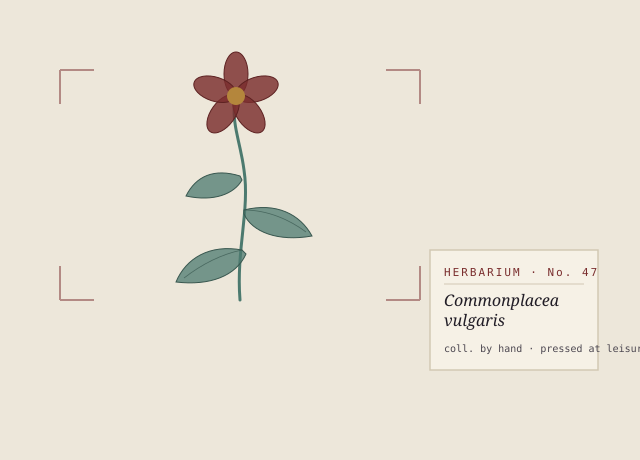

Journal· 22 Apr 2026· 4 min read
On Keeping a Commonplace Book
Why I copy other people's sentences into a book of my own — and what happens in the margins while I do.
For about four hundred years, the most literate people in Europe kept books made almost entirely of other people's sentences. They were called commonplace books, and they were not diaries. A diary is where you keep your own days. A commonplace book is where you keep the borrowed lines worth stealing.
Milton kept one. So did Jefferson, and Bacon, and — later, more anxiously — Virginia Woolf and E. M. Forster. You read, and when a sentence stopped you, you copied it out by hand under a heading, so that later you could find all your gathered thoughts on friendship or the sea or death in one place, in one hand, cross-pollinating.
What I love is that copying is slow, and the slowness is the point. You cannot copy a sentence out by hand without, for thirty seconds, thinking exactly as fast as it was written. You catch the joins. You feel where the writer took a breath. A sentence you merely highlight, you have flattered; a sentence you copy, you have actually read.

And then there are the margins. Because you never only copy. Beside the borrowed sentence you write the small argument you're having with it — yes, but, or cf. the other one, or simply !. The book fills up sideways. Over years the marginalia outgrow the quotations, and one day you realise the borrowed sentences were only ever trellises, and the thing you were actually growing was your own mind, in the gaps.
This website is a commonplace book. That is the whole idea of it. Some of what's here is invented — stories, weather from the interior country — and some of it is just me copying out the world's better sentences and arguing with them in the margin. The clutter of the index page is not decoration for its own sake; it is what a commonplace book looks like after a few good years: dense, cross-referenced, tilted, alive.
If you keep one too, a plain notebook is enough. The only rule that matters is the old one, and I've pinned it to the index page where I'll see it: read twice, copy once, remember always.